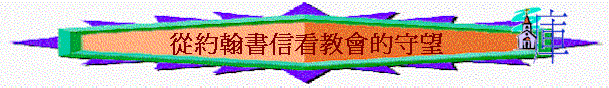

|
教會的權柄 |
教會的建立 |
教會的奧秘 |
教會的守望 |
引：今日我們可以怎樣守望教會？
主重視教會的事情是甚麼？
一.長老的職責
「我從前留你在革哩底，是要你將那沒有辦完的事都辦整齊了，又照我所吩咐你的，在各城設立長老。」多1:5
「監督既是神的管家，必須無可指責，不任性，不暴躁，不因酒滋事，不打人，不貪無義之財。樂意接待遠人，好善，莊重，公平，聖潔自持。堅守所教真實的道理，就能將純正的教訓勸化人，又能把爭辯的人駁倒了。」多1:7-9
「聖靈立你們作全群的監督，你們就當為自己謹慎，也為全群謹慎，牧養神的教會，就是他用自己血所買來的（或作：救贖的）。」徒20:28
〜長老又有另一名稱為「監督」，負責監督教會，為教會守望，守望教會有否異道入侵，是否持守真理。
二.約翰的身份
「作長老的寫信給蒙揀選的太太（或作：教會；下同），和他的兒女，就是我誠心所愛的；不但我愛，也是一切知道真理之人所愛的。」約貳1
「作長老的寫信給親愛的該猶，就是我誠心所愛的。」約1
「當主日，我被聖靈感動，聽見在我後面有大聲音如吹號，說：「你所看見的當寫在書上，達與以弗所、士每拿、別迦摩、推雅推喇、撒狄、非拉鐵非、老底嘉、那七個教會。」」啟1:10-11
〜約翰就是當時教會的長老，他有責任將他所見到，他所聽見，他所守望的向教會說明，而從約翰所守望的事情，也成為我們的提醒，教我們如何為教會守望。
三.守望的內容
1.為自己守望(從約翰壹書看)
「小子們哪，你們要自守，遠避偶像！」約壹5:21
〜作為長老，對年幼的肢體稱呼為「小子」，約翰期望「小子們」先為自己守望，要自守，守著甚麼事情？
A.不要犯罪
「我小子們哪，我將這些話寫給你們，是要叫你們不犯罪。若有人犯罪，在父那裡我們有一位中保，就是那義者耶穌基督。」約壹2:1
B.不愛世界
「父老啊，我曾寫信給你們，因為，你們認識那從起初原有的。少年人哪，我曾寫信給你們；因為，你們剛強，神的道常存在你們心裡；你們也勝了那惡者。不要愛世界和世界上的事。人若愛世界，愛父的心就不在他裡面了。」約壹2:14-15
C.要愛弟兄
「我們應當彼此相愛。這就是你們從起初所聽見的命令。」約壹3:11
D.要辨諸靈
「親愛的弟兄啊，一切的靈，你們不可都信，總要試驗那些靈是出於神的不是，因為世上有許多假先知已經出來了。」約壹4:1
〜今日我們要為神家守望之先，先為自己謹慎，有否守著神的話，不犯罪，愛肢體呢？
2.為教會守望(從約翰貳書看)
A.留心有迷惑的事出現
「因為世上有許多迷惑人的出來，他們不認耶穌基督是成了肉身來的；這就是那迷惑人、敵基督的。你們要小心，不要失去你們（有古卷：我們）所做的工，乃要得著滿足的賞賜。」約貳7-8
〜若教會不小心，受迷惑的事攪擾，可能會因此失去之前教會辛辛苦苦建立的根基，之前所作的工!
〜而將來迷惑的事情必然很多，教會當留心!
B.不容異道者來到教會
〜當時會有自稱為傳道的人來到教會，教會不是所有人都接待，而是：
a.要辨別
「凡越過基督的教訓、不常守著的，就沒有神；常守這教訓的，就有父又有子。若有人到你們那裡，不是傳這教訓，不要接他到家裡，也不要問他的安；」約貳9-10
b.不接待
「若有人到你們那裡，不是傳這教訓，不要接他到家裡，也不要問他的安；」約貳10
c.不問安
3.為肢體守望(從約翰三書看)
A.欣賞行善的肢體
「作長老的寫信給親愛的該猶，就是我誠心所愛的。親愛的兄弟啊，我願你凡事興盛，身體健壯，正如你的靈魂興盛一樣。有弟兄來證明你心裡存的真理，正如你按真理而行，我就甚喜樂。我聽見我的兒女們按真理而行，我的喜樂就沒有比這個大的。親愛的兄弟啊，凡你向作客旅之弟兄所行的都是忠心的。他們在教會面前證明了你的愛；你若配得過神，幫助他們往前行，這就好了。」約1-6
〜該猶按真理行，接待作客旅之弟兄，他的善行受到作長老的肯定與欣賞
B.指斥行惡的會眾
「所以我們應該接待這樣的人，叫我們與他們一同為真理做工。我曾略略的寫信給教會，但那在教會中好為首的丟特腓不接待我們。所以我若去，必要提說他所行的事，就是他用惡言妄論我們。還不以此為足，他自己不接待弟兄，有人願意接待，他也禁止，並且將接待弟兄的人趕出教會。親愛的兄弟啊，不要效法惡，只要效法善。行善的屬乎神；行惡的未曾見過神。」約9-11
∼丟特腓卻行惡，不接待神的僕人，也用惡言妄論他們及禁止人接待，這樣的人要受斥責！
4.用基督的眼光守望(從啟示錄看)
「耶穌基督的啟示，就是神賜給他，叫他將必要快成的事指示他的眾僕人。他就差遣使者曉諭他的僕人約翰。約翰便將神的道和耶穌基督的見證，凡自己所看見的都證明出來。念這書上預言的和那些聽見又遵守其中所記載的，都是有福的，因為日期近了。」啟1:1-3
「我轉過身來，要看是誰發聲與我說話；既轉過來，就看見七個金燈臺。燈臺中間有一位好像人子，身穿長衣，直垂到腳，胸間束著金帶。他的頭與髮皆白，如白羊毛，如雪；眼目如同火焰；」啟1:12-14
「論到你所看見、在我右手中的七星和七個金燈臺的奧秘，那七星就是七個教會的使者，七燈臺就是七個教會。」」啟1:20
「我又要把晨星賜給他。」啟2:28
〜約翰在異象中見到基督，基督在七個金燈臺行走，金燈臺就是
代表教會，主要將祂在教會中守望的情況告知約翰，向眾教會說明。
〜從主對七教會的提醒，我們可以看到基督關心教會的事情是甚麼，我們也可以用主的眼光守望神的家(祂對教會所重視的事情)
A.起初愛心
「我知道你的行為、勞碌、忍耐，也知道你不能容忍惡人。你也曾試驗那自稱為使徒卻不是使徒的，看出他們是假的來。你也能忍耐，曾為我的名勞苦，並不乏倦。然而有一件事我要責備你，就是你把起初的愛心離棄了。」啟2:2-4
~原來主重視教會有否起初的愛心，此愛心 可能是對主或對人，以弗所教會當初對主的 愛心，十分熱烈，為主放低一切，離棄邪術，偶像，主是記得的，另外，他們對眾人的 愛心，保羅也欣賞，但時間久了，此熱烈、 單純的初愛卻改變了！
B.至死忠心
「你將要受的苦你不用怕。魔鬼要把你們中間幾個人下在監裡，叫你們被試煉，你們必受患難十日。你務要至死忠心，我就賜給你那生命的冠冕。」啟2:10
〜另外主也期望教會能至死忠心。
〜士每拿教會可以「不用怕」雖然是預定會有幾個人下在監�堙A必受患難「十日」(可能指真正的十日，或只是一個整全概括的數，指多日)，但仍可以不用怕，仍可至死忠心。
〜至死忠心的動力在於主賜那「生命的冠冕」，在以前的年代，若在運動比賽中，堅持到底，
得勝的人會得冠冕，信徒亦可以，但得的是生命的冠冕，強調「生命」雖至死，但仍有活潑
永恆的生命，成為他的榮耀
C.整體純正
「我知道你的居所，就是有撒但座位之處；當我忠心的見證人安提帕在你們中間、撒但所住的地方被殺之時，你還堅守我的名，沒有棄絕我的道。」啟2:13
∼「撒但坐位之處」可指當時環境多廟宇，多偶像，有撒但之權勢，但他們仍堅守主的道。「然而，有幾件事我要責備你：因為在你那裡有人服從了巴蘭的教訓；這巴蘭曾教導巴勒將絆腳石放在以色列人面前，叫他們吃祭偶像之物，行姦淫的事。你那裡也有人照樣服從了尼哥拉一黨人的教訓。」啟2:14-15
〜教會雖沒棄主的道，但個別人仍有問題，跟從巴蘭的教訓(可能指某些敵擋勢力像舊約的巴蘭引誘人行淫亂)行屬靈的淫亂，貪圖在假宗教筵席中的食物，吃偶像之物，親假神，沒持守信仰的忠貞純潔
〜原來教會中只要有一些人不純正，主仍責備教會的使者，可見主的要求不是單某些人持守主的道，祂是要整體持守！
D.持守真理
a.有生命成長仍要有真理
「我知道你的行為、愛心、信心、勤勞、忍耐，又知道你末後所行的善事，比起初所行的更多。然而，有一件事我要責備你，就是你容讓那自稱是先知的婦人耶洗別教導我的僕人，引誘他們行姦淫，吃祭偶像之物。」啟2:19-20
∼推雅推喇教會有行為信心，末後的善，比起初所行更多，證明是有成長的，但主仍責備他們，容讓不合真理事發生，沒真理，主仍要責備。
b.有愛心行為仍要有立場
〜「先知的婦人耶洗別」約翰在啟示錄中，有智慧地用了一些舊約的人物代表當時一些人，(避免給仇敵指控的機會)，「耶洗別」是引誘亞哈離棄神，拜偶像，她是一個有權柄的人，有跟隨她的手下。
〜在當時教會也出現一個類似「耶洗別」的人，他未必是女性，但所作的和耶洗別相似，引誘信徒行屬靈淫亂，不悔改，有党類(可能在教會中有權柄的)，但至終受主管教。
〜當時信徒或許有愛心，包容他，但主是不許的，有愛心不代表沒立場，一些不行真理，引人離棄神，不能妥協的。
c.有美好榜樣仍要守到底
「至於你們推雅推喇其餘的人，就是一切不從那教訓、不曉得他們素常所說撒但深奧之理
的人，我告訴你們，我不將別的擔子放在你們身上。但你們已經有的，總要持守，直等到我來。」啟2:24-25
E.行為完全
「你要寫信給撒狄教會的使者，說：『那有神的七靈和七星的，說：我知道你的行為，按名你是活的，其實是死的。你要警醒，堅固那剩下將要衰微（原文作死）的；因我見你的行為，在我神面前，沒有一樣是完全的。所以要回想你是怎樣領受、怎樣聽見的、又要遵守，並要悔改。若不警醒，我必臨到你那裡，如同賊一樣。我幾時臨到，你也決不能知道。』」啟3:1-3
∼主也留意教會的肢體們行為是否完全的。
∼撒狄教會按名是活，其實是死的，即教會虛有其名，表面上是燈臺，但內�媃F�堨�景是死的，暗淡的，行為沒有一樣是完全的。
∼一個使者，如發現教會軟弱，要為整教會過往悔改
F.遵守主道
「我知道你的行為，你略有一點力量，也曾遵守我的道，沒有棄絕我的名。看哪，我在你面前給你一個敞開的門，是無人能關的。那撒但一會的，自稱是猶太人，其實不是猶太人，乃是說謊話的，我要使他們來，在你腳前下拜，也使他們知道我是已經愛你了。」啟3:8-9
∼非拉鐵非教會所行，所守的是主欣賞，雖猶太人或許不接納他們(外邦人)，但神給他們權柄，開啟天國的門，得以在天國上有份，將來那名不符實的猶太人必要尊敬他們，更看見外邦得勝教會也是神所肯定的，神所愛的。
G.時常火熱
「我知道你的行為，你也不冷也不熱；我巴不得你或冷或熱。你既如溫水，也不冷也不熱，所以我必從我口中把你吐出去。」啟3:15-16
∼主看重教會是否時常火熱，若老底嘉教會不冷也不熱，主要不再用它（吐出來的意思）
備註：實際可行守望教會的方法
1.多用禱告守望肢體(求神賜智慧，用真理守望肢體）
2.多參與聚會，及與肢體相交，從中守望聚會氣氛，肢體近況，聽道反應．．．．．．
3.定期留意肢體出席各項聚會情況(有否持續下跌，原因何在？)
4.團契/教會可分部門守望相關情況(傳道部守望肢體傳福音心志，靈修部守望肢體有否靈修，愛慕聚會．．．）
5.定期與牧者/導師相交，聽取他們對肢體情況意見
6.留意:守望的問題只是個別的特殊問題，還是整體問題？ 會否誇大問題的嚴重性？